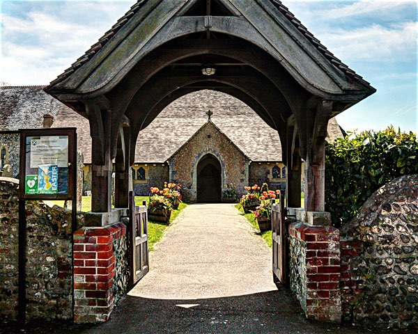
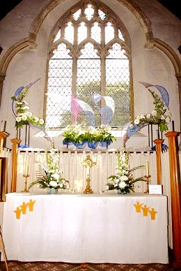
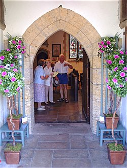

St. Andrew's Church
History of St. Andrew's
St Andrew’s Church stands on a low hill in the heart of the old part of Ferring Village amongst some of the oldest cottages in the village.
Ferring is probably one of the oldest churches in Sussex. At the time of the Doomsday Survey, the 'demesne of ferringes' had two ploughs, while 15 villeins and 14 bordars had five ploughs (a plough being a measure of the arable land which could be worked by a plough with a team of eight oxen).
The first church of St Andrew in Ferring was built between 765 and 791. With it was associated the endowment of land which became the basis of Ferring Manor, an episcopal property of the see of Selsey. Together, church and manor were established as the centre of village life well before the Norman Conquest.
The existing building was started in about 1120 on the site of the original church. The west wall and south wall in the Nave date back to this time. The church was enlarged in 1250, when the chancel was built and the northern side extended.
It has been suggested that, centuries ago, the current porch formed the base of a tower, a possibility which might account for the blocked-up doorway seen on the inner side of the east wall.
The church has seen Ferring grow from a small hamlet of under a hundred souls to the present active and successful community of just under five thousand.
All this time the church has helped the people of Ferring in good and difficult times.
Our church guide book, with further information on St Andrew's and the village of Ferring, is being revised for a new edition.
But for more on the history of the church please see our page on Ferring History Group.